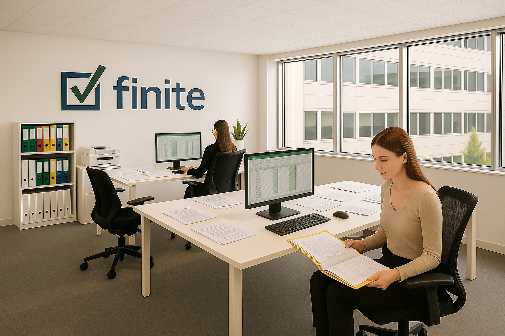

Kompleksowe usługi księgowe, podatkowe i kadrowo-płacowe, które pomogą Ci rozwijać firmę bez zmartwień o formalności.
Skontaktuj się z nami
Specjalizujemy się w podmiotach prowadzących księgi rachunkowe, wspieramy podmioty regulowane jak TFI, ASI, pośrednicy finansowi, spółki giełdowe. Posiadamy doświadczenie w obsłudze fundacji i stowarzyszeń, zarówno w obszarze księgowości jak i rozliczania grantów oraz dotacji. Prowadzimy również obsługę jednoosobowych działalności. Świadczymy usługi z zakresu księgowości i kadr, controllingu oraz wsparcia w doradztwie finansowym.
Prowadzimy księgi rachunkowe, rejestry VAT oraz inne ewidencje.
Prowadzimy księgi rachunkowe, rejestry VAT oraz inne ewidencje dla wszystkich podmiotów objętych obowiązkiem prowadzenia pełnej księgowości.
- Przygotowanie planu kont, polityki rachunkowości i innych instrukcji wewnętrznych
- Ewidencjonowanie wszystkich zdarzeń gospodarczych w księgach rachunkowych w ujęciu podatkowym, bilansowym, zarządczym
- Prowadzenie ewidencji środków trwałych, wartości niematerialnych i prawnych oraz wyposażenia
Sporządzanie bilansu otwarcia
- Prowadzenie rejestrów VAT
- Rozliczenia podatkowe (VAT, VAT -OSS, CIT, PIT i inne) oraz sprawozdawczość na rzecz urzedów skarbowych i innych instytucji (np. GUS)
- Rozliczanie exportu, importu, transakcji wewnątrzwspólnotowych
- Reprezentacja przed organami podatkowymi
- Sporządzanie sprawozdań finansowych (bilans, rachunek zysków i strat, informacja dodatkowa, rachunek przepływów pieniężnych), rocznych deklaracji podatku dochodowego [CIT/PIT]
- Sporządzanie sprawozdań skonsolidowanych
- Obsługa audytów, dodatkowa sprawozdawczość i raportowanie, w tym rozrachunki, wiekowanie, indywidualnie ustalony zakres raportowania zarządczego oraz obligatoryjnego np. ESPI.
Księgowość uproszczona dla małych firm, księgi podatkowe oraz rejestry VAT.
Księgowość uproszczona (Księga Przychodów i Rozchodów, ryczałt) opiera się na prostych zasadach ewidencjonowania zdarzeń gospodarczych celem określenia zobowiązań podatkowych małych przedsiębiorców.
Finite wspiera Klientów w wyborze najlepiej dopasowanej formy prowadzenia działalności jak i formy opodatkowania. Od początku współpracy Klient ma przydzielonego doświadczonego Księgowego, który bezpośrednio odpowiada za proces księgowy, rozlicza podatki, składa deklaracje podatkowe.
a) Księga Przychodów i Rozchodów (KPiR)
- Prowadzenie Księgi Przychodów i Rozchodów
- Prowadzenie rejestrów VAT
- Prowadzenie ewidencji środków trwałych, wartości niematerialnych i prawnych oraz wyposażenia
- Ewidencja przebiegu pojazdów
- Rozliczanie delegacji
- Rozliczenia podatkowe (PIT, VAT), przygotowanie i składanie deklaracji podatkowych (VAT, VAT-UE, PIT)
- Rozliczanie exportu, importu, transakcji wewnątrzwspólnotowych
- Rozliczenia z ZUS, deklaracje ZUS, zgłaszanie, aktualizacja, wyrejestrowywanie z ZUS
- Reprezentacja przed organami podatkowymi oraz ZUS
b) Ryczałt od przychodów ewidencjonowanych
- Prowadzenie ewidencji przychodów
- Prowadzenie rejestów VAT
- Prowadzenie ewidencji środków trwałych, wartości niematerialnych i prawnych oraz wyposażenia
- Rozliczenia podatkowe (PIT, VAT), przygotowanie i składanie deklaracji podatkowych (VAT,VAT-UE, PIT)
- Rozliczanie exportu, importu, transakcji wewnątrzwspólnotowych
- Rozliczenia z ZUS, deklaracje ZUS, zgłaszanie, aktualizacja, wyrejestrowywanie z ZUS
- Reprezentacja przed organami podatkowymi oraz ZUS
Kompleksowa obsługa kadrowo-płacowa, prowadzenie dokumentacji pracowniczej, naliczanie wynagrodzeń i rozliczenia z ZUS.
Kompleksowa obsługa kadrowo-płacowa, prowadzenie dokumentacji pracowniczej, naliczanie wynagrodzeń i rozliczenia z ZUS. Przykładamy szczególną wagę do zachowania poufności wszystkich danych kadrowo-płacowych.
- Prowadzenie akt osobowych pracowników.
- Realizacja czynności związanych z nawiązaniem, wygaśnięciem lub rozwiązaniem stosunku pracy
- Monitorowanie terminów ważności aktualnych umów, badań lekarskich, BHP
- Rejestrowanie i wyrejestrowywanie osób zatrudnionych oraz członków ich rodzin w ZUS
- Ewidencja umów cywilno-prawnych
- Naliczanie wynagrodzeń, wynagrodzeń za czas urlopu, choroby, zasiłków chorobowych,macierzyńskich itp. dla pracowników (UoP) i współpracowników (UCP)
- Przygotowanie paczek przelewów do zaczytania do banku
- Rozliczenia podatkowo- składkowe związane z wynagrodzeniami
- Obsługa PFRON (Państwowy Fundusz Osób Niepełnosprawnych)
- Rozliczenia podatkowe oraz deklaracje (PIT-11, PIT-4R, PIT-8AR)
- Reprezentacja przed organami podatkowymi, ZUS, PFRON, Państwową Inspekcję Pracy
- Wsparcie w zakresie Pracowniczych Planów Kapitałowych
Zakładanie firm, raportowanie KNF/NBP, dotacje UE, controlling i wsparcie CFO.
1. Wsparcie w założeniu działalności/spółki
Jeżeli otwierasz nową spółkę lub start-up czy zamierzasz współpracować na zasadach b2b to Finite pomoże Ci we wszelkich formalnościach, abyś mógł się skupić na podstawowej działalności. Pomożemy porównać różne formy działalności i opodatkowania.
2. Raportowanie na rzecz KNF/ NBP/ giełdy
Przygotowujemy w imieniu Klientów (TFI, ASI, pośrednicy) raporty na rzecz Komisji Nadzoru Finansowego, Narodowego Banku Polskiego oraz raporty giełdowe przeznaczone do okresowej publikacji.
3. Wsparcie w przygotowaniu i rozliczeniu wniosków o dofinansowanie m.in. ze środków UE
Pomagamy przygotować wniosek o dofinansowanie, zwłaszcza obszary dotyczące projekcji finansowej. Później także rozliczamy przyznane dotacje.
4. Controlling, raportowanie i pełnienie roli CFO
W szczególności w przypadku większych podmiotów często pełnimy rolę CFO, który analizuje sytuację finansową przedsiębiorstwa i na bieżąco przedstawia Zarządowi. Przygotowujemy także rozszerzone raportowanie np. na potrzeby zewnętrznych inwestorów.
Dla nas ksiegowość to nie tylko praca, to nasza pasja i nasze życie. Nie chcemy wspierać naszych klientów jedynie w realizacji obowiązków podatkowo -księgowych, pomagamy im zrozumieć finanse, w przystępny sposób przedstawić opcje i skutki działań, tak by mogli w sposób świadomy podejmować decyzje biznosowe służące rozwojowi ich przedsiebiorstw.
Finite Kancelaria Rachunkowa Sp. z o.o. to nowoczesna firma specjalizująca się w świadczeniu kompleksowych usług księgowych dla przedsiębiorstw z różnych sektorów rynku. Dążymy do tego, aby być niezawodnym partnerem w zarządzaniu finansami naszych klientów, pomagając im rozwijać ich działalność w sposób bezpieczny i zgodny z obowiązującymi przepisami. Nasze podejście łączy w sobie tradycyjne wartości, takie jak rzetelność i odpowiedzialność, z nowoczesnymi metodami pracy, opierającymi się na innowacyjnych narzędziach cyfrowych i zaawansowanej automatyzacji procesów księgowych. Naszym priorytetem jest świadczenie usług na najwyższym poziomie, dostosowanych do indywidualnych potrzeb każdego klienta. Współpracujemy zarówno z małymi, lokalnymi przedsiębiorstwami, jak i z większymi firmami o zasięgu krajowym i międzynarodowym. Wierzymy, że każda firma, niezależnie od skali działalności, zasługuje na profesjonalne wsparcie w obszarze finansów i rachunkowości. Dzięki naszemu doświadczeniu oraz bieżącej wiedzy na temat zmieniających się przepisów, jesteśmy w stanie zaproponować rozwiązania, które nie tylko adresują sprawy księgowo -podatkowe, ale także ułatwią podejmowanie strategicznych decyzji biznesowych.
Dołącz do naszego zespołu profesjonalistów i rozwijaj swoją karierę w księgowości!
Wyślij swoje CV na poniższy adres e-mail. Zapoznamy się z Twoją aplikacją i odezwiemy się do Ciebie.
kontakt@finite.plMasz pytania dotyczące naszych usług? Chcesz dowiedzieć się, jak możemy pomóc Twojej firmie? Skontaktuj się z nami!